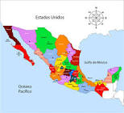
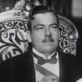

David Castro Gutiérrez
Dante Peña Ibarra
Moises Ambriz Aldana
1-.LA GENTE VA Y VIENE:El desplazamiento temporal o permanente de las personas, ya sea de un país a otro, o de una ciudad a un pueblo, esto se llama migración.
La gente abandona su lugar de origen por varias razones como la economia ,por la familia, etcétera.
Actualmente, la migración occure por la busqueda de mejor calidad de vida y bienestar hay 2 tipos de migracion.
La emigracion:es la accion de salir de tu lugar de origen.
La inmigracion:es la acción de llegar al lugar de destino Emigrante:Es cuando una persona sale de su lugar de origen
Inmigrante:Cuando una persona llega al lugar de destino
La migracion externa es el movimiento de personas en diferente pais la migracion interna es cuando te trasladas al mismo pais.
Los paises se puende clasificar de acuerdo con su migracion, en expulsores y receptores .los paises con principales son los del sureste de asia,africa,europa orientea y america latina y los receptores principales son los paises de europa occidental.
Estados unidos atrae personas de todos los lugares el principal flujo migartorio viene de mexico otros paises tiene bajos flujos migratorios com brasil y argentina que captan migrantes de peru bolivia lo mismo con japon
Culturas que enriquecen el mundo
El idioma que hablamos,lo que comomemos,como vestimos y hablamos incluyendo las tradiciones que pasan de padre a hijo enseñan a sus hijos a como vestir y comer como ellos y expresiones verbales que dicen o decian las costumbres tiene mucho que ver con las regiones naturales del pais tambien la religion y las fiesta como en Mexico el dia de muertos deta de la epoca prehispanica y tambien hay que festejaban la religion
Rituales tradicionales
El salto de los vanauta:los vanautas hombres a los 8 años saltan de una tabla de 30 metros con solo una cuerda ni ropa llevan el piso debe tocar su cabeza esto se haza para impresionar a los dioses.
El salto de las vacas en hamar:los hamar hombres de 12 a 15 años deben saltar 4 vacas si lo hacen sin ni un error tienen respeto.
La gran fiesta de la nueva vida: en la region de andina de america del sur cada 21 de diciembre hace un ritual dedicada ala continuacion de la vida en solsticio de invierno y en el ritual consiste en que los viejos le daban obseqios a los jovenes que significa el traspaso de a poder a los nuevos lideres.
La diversidad cultural del mundo
Desde el principios de los tiempos los grupos humanos siempre se desplazaron a diferentes lugars del planeta con el tiempo lo pueblos se fusionaron lo que hicieron rasgos diversos com la cultura, la lengua y la religion.
Las religiones son ecensiales en la culturas de las sociedades la coexistencia de dos religones o mas es resultado de la migracion humana que llevan consigo su cultura con los que mas se indetifica .Cada cultura es igual de importante que todas las demas culturas aunque sean muy diferentes en su vision.
Las lengua y la religion es fundamental para la cultura por que con ellas se consiguen la informacion e ideas se consigue la historia y comunicacion .
La migracion tambien influye en la cultura por ejemplos lo mexicanos que viven en estados unidos combinan el español ye l ingles se les dice cholos .
HISTORIA

1.-DE LOS CAUDILLOS AL PRESIDENCIALISMO
En la Constitución de 1917 se dispuso llevar a cabo diferentes cambios en las instituciones para encaminar a México a la solución de sus problemas. Sin embargo, algunos ciudadanos veían en la Constitución una amenaza en sus intereses, o bien resentimiento por las pérdidas que la Revolución les había producido. Otros habían resultado beneficiados y se proponían mantener los privilegios conseguidos. Así, tan pronto inició su gestión el primer gobierno surgido de la Revolución, comenzóun nuevo periodo de luchas políticas y rebeliones armadas.
El presidente Venustiano Carranza (de 1917-1920) tuvo la responsabilidad de inaguar y poner en funcionamiento el nuevo gobierno. Combatió a opositores, entre ellos a antiguos revolucionarios como Emiliano Zapata, legisladores y gobernadores inconformes con las iniciativas y disposiciones de gobierno. Los campesinos y obreros se inconformaron por la crisis económica que se vivía. Un levantamiento armado desconoció a su gobierno, por lo que Carranza tuvo que huir de la capital y finalmente murió asesinado. Adolfo de la Huerta ocupó de manera temporal la presidencia mientras se realizaban elecciones.
Durante los seis meses de su mandato, De la Huerta se ocupó de arreglar o tratar de pacificar muchos de los problemas que habían alimentado el descontento popular y las luchas políticas durante el gobierno del presidente Carranza y, gracias a ello, el país comenzó a estabilizarse.
El general Álvaro Obregón fue presidente de México de 1920 a 1924. Su participación en la Revolución había sido sobresaliente debido a sus grandes habilidades políticas y militares. Como presidente llevó a cabo el reparto agrario, protegió la propiedad privada, ganó el apoyo de los obreros, de los campesinos y de sus adversarios políticos, arregló las conflictivas relaciones con el gobierno de Estados Unidos y fundó importantes instituciones, como la Secretaria de Educación Pública ( SEP ) en 1921. Con su poder e influencia logró que sus aliados modificaran el principio constitucional de no reelección presidencial, lo que provocó una grave crisis política.
Durante su gobierno, el presidente Plutarco Elías Calles (de 1924 a 1928) se propuso impulsar las reformas necesarias para que México consiguiera un mejor desarollo ecónomico y social. Con ese propósito creó importantes instituciones como el Banco de México en 1925, y negoció con otros gobiernos para un mayor beneficio de México en la explotación de sus recursos naturales.
En los últimos dos años de su gestión, enfrentó serios problemas políticos provocados por la guerra cristera y el asesinato del presidente electo Álvaro Obregón, Después de concluir su mandato, entre 1928 y 1934, continuó influyendo en el gobierno a través de sus sucesores. Este periodo es conocido como el Maximato porque, aunque ya no era presidente, Plutarco Elías Calles decidía sobre muchos asuntos, y por ello se le conocía como el Jefe Máximo.
Subtema 1.-La Rebelión Cristera: En la constiitución de 1917 se limitó la influencia de la Iglesia y la intervención de sus miembros en asuntos públicos. En 1926, el presidente Calles expidió una ley que prohibía el culto externo y oficiar sacerdotes extranjeros; limitaba el número de sacerdotes y clausuraba las escuelas católicas. En respuesta, las autoridades de la Iglesia católica suspendieron las actividades religiosas en todos sus recintos y sus feligreses realizaron numerosas protestas contra la acción del gobierno, llegando incluso a las agresiones.
El conflicto creció y se convirtió en una rebelión armada, conocida como guerra cristera, que se extendió por varios estados del centro-occidente:Michoacán, Guanajuato, Jalisco, Colima, Nayarit, Zacatecas y Aguascalientes. Soldados y rebeldes murieron en los campos de batalla. A mediados de 1929 un acuerdo puso fin a este sangriento enfrentamiento. La Iglesia católica acordó no participar en la vida política del país y reconoció la autoridad del gobierno federal. A su vez, éste se conprometió a devolver los templos ocupados y permitir la reanudación de los cultos.
Subtema 2.-La creación y consolidación del PNR y el surgimiento de nuevos partidos: La no reelección fue uno de los principales defendidos en la Revolución.Esta conquista de este derecho permitió que aumentara el número de partidos políticos.
Para fortalecer al gobierno y terminar con las rebelionea armadas por la presidencia, Plutarco Elías Calles propuso la creación de un partido político, asi, en 1929 se fundó el PNR (Partido Nacional Revolucionario). Muchos sindicatos y organizaciones se unieron a él. En 1938 se reformó y se conformó por 4 sectores (obrero,campesino,popular y militar) y se llamó Partido de la Revolución Mexicana (PRM). En 1946, tuvo otra transformación y adoptó el nombre de Partido Revolucionario Institucional (PRI).
A pesar del predomino del partido oficial,los partidos de oposición conservaron su importante presencia política en la sociedad.Hubo momentos en que sus candidatos estuvieron cerca de ganar las elecciones presidenciales,como los generales Juan Andrew Almazán en 1940 y Miguel Enríquez Guzman en 1952. Sus seguideros acusaron al gorbierno de haber cometido fraude electoral en favor de PRM y del PRI .Hubo otros partidos de opoción,como el Partido Acción Nacional(PAN), fundado e n 1939 por el abogado Manuel Gómez Morín,y el Partido Comunista Mexicano(PCM),creado en 1919.solo hasta la decada de 1970 la opoción comenzó a ganar algunas elecciónes locales.En 1977,Jesus Reyes Helodedes,secretario de goberción, impulso una refórma electoral a fin depermitir a los partidos de opción,participar con mayor libertidad en los procesos electorales.de esta forma,diputadosde diversos partidos se integraron al congreso.
GUÍA
El movimiento de independencia varias causas .primera el pensamientos ilustrado de los francesesse difundio entre algunos sectores de las dominarios desde medidas DEL SIGLO X ESTO LLEVO A QUE SE REFLEXION pARA sobre las causas real borbon de origen francesa . propuso una serie de reformas. Llamadas reformas borbonicas que cambiaron la administracion y elevaron los impuestos lo que genero crisis agricolas y mucho descontento . en 1810 miguel hidalgo, ignacio allende , josefa ortiz de dominguez y juan aldama se reunieron en queretaro y para septiembre de ese año hidalgo y allende se levantaron en armas. Fueron vencidos y fusilados en junio de 1811 jose maria morelos y pavon encabezo la rebelion desde 1812.en 1814 fernando VII recupero el trono de españa y elemina la consitucion liberal de 1812. Finales de 1815 morelos fue fusilado despues de proclamar los sentimientos de las nacion,documento que plantea la independencia de america. Su muerte afecto al movimiento independista. Muchos inurgentes aceptaron el perdon ofrecida por el virrey apodaca en 1816 y dejaron las armas. Otros como vicente guerrero, mantuvieron la lucha hasta 1821 mediante ataques rapidos a los realistas.
Clik para ir a YOUTUBE